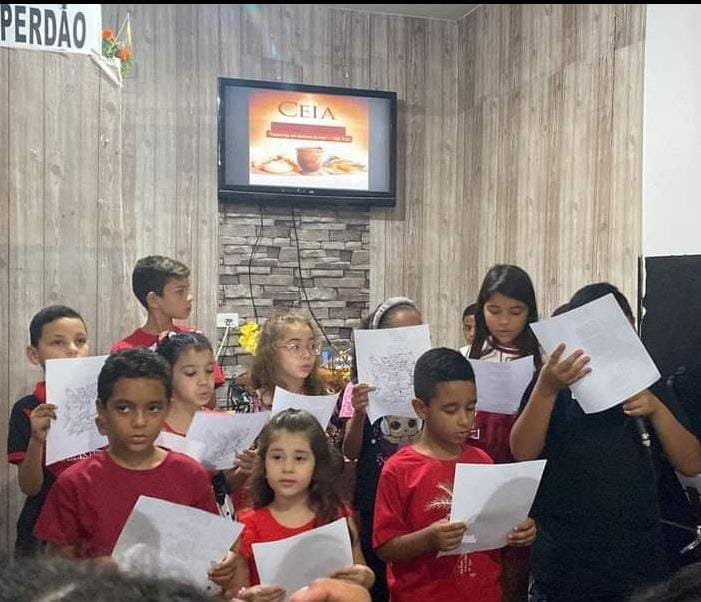

SEJA BEM-VINDO(A) À PÁGINA DE PROJETOS SOCIAIS!
Aqui, nesta página, você encontrará informações pertinentes sobre os projetos sociais que nós realizamos.
O QUE SÃO PROJETOS SOCIAIS?
Um projeto social é uma iniciativa planejada e organizada que busca promover o bem-estar social, a inclusão, a melhoria da qualidade de vida e o desenvolvimento sustentável de comunidades ou grupos específicos, geralmente em situação de vulnerabilidade.
Portanto, nós, da Igreja Evangélica Jesus é o Caminho, através de nossos projetos sociais, buscamos seguir o exemplo de Jesus, servindo aos necessitados, acolhendo os mais vulneráveis e construindo um mundo mais justo, solidário e cheio de compaixão.
PROJETOS SOCIAIS DA IGREJA JESUS É O CAMINHO
DOAÇÃO DE ROUPAS
A doação de roupas é um ato de solidariedade que contribui para a construção de uma sociedade mais justa e igualitária. Ao oferecer roupas, calçados e itens de cama, você está proporcionando mais do que apenas itens essenciais, está oferecendo uma oportunidade para que pessoas em situação de vulnerabilidade possam reconstruir suas vidas com dignidade e esperança.
A beleza dessa ação reside no impacto que ela gera. Roupas que para uns podem parecer sem valor, para outros representam um renascimento de confiança e conforto. O poder de uma simples peça de roupa é enorme: ela oferece proteção contra o frio, conforto em dias difíceis e, acima de tudo, a sensação de que ainda há bondade no mundo.
Além de beneficiar pessoas em situação de vulnerabilidade, a doação de roupas também é uma prática sustentável e amiga do meio ambiente. Cada peça doada é uma que não vai para o lixo, evitando o acúmulo de resíduos nos aterros e promovendo o reaproveitamento de recursos. Assim, ao doar, você também está colaborando para a preservação do planeta.
ESCOLA BÍBLICA DE FÉRIAS
A Escola Bíblica de Férias (EBF) oferece um ambiente seguro e estimulante para o aprendizado infantil, combinando atividades de recreação com cuidados de zeladoria. Através de brincadeiras, jogos, histórias bíblicas e diversas outras atividades lúdicas, as crianças desenvolvem suas habilidades sociais, cognitivas e espirituais, enquanto são acompanhadas por monitores capacitados.
Essa ação está sendo um catalisador para o desenvolvimento integral das crianças, preparando-as para serem agentes de transformação em uma sociedade mais justa e solidária. Ao oferecer oportunidades de aprendizado, crescimento e desenvolvimento social, essa iniciativa contribui para a formação de indivíduos éticos, responsáveis e comprometidos com o bem comum.
Portanto, a zeladoria e as atividades de recreação na Escola Bíblica de Férias são componentes importantes de um projeto social que visa o bem-estar e o desenvolvimento integral das crianças.
CULTO DE NATAL
A realização de um culto de Natal com um jantar preparado exclusivamente com doações é um belo exemplo de como a comunidade pode se unir em prol de um objetivo comum. Ao compartilhar alimentos e celebrar juntos, os membros da comunidade demonstram solidariedade, fortalecendo os laços e criando um sentimento de pertencimento.
A iniciativa de preparar um jantar de Natal com doações é um projeto social inspirador que demonstra o poder transformador da solidariedade. Ao oferecer alimentos e promover a convivência, a comunidade está construindo um mundo mais justo e solidário, onde todos se sentem acolhidos e valorizados.
LIMPEZA DE CALÇADA
A limpeza de calçadas é uma excelente oportunidade para educar a população sobre a importância de cuidar do espaço público. Ao envolver crianças, jovens, adultos e, em especial, a terceira idade em projetos como esse, estamos construindo uma sociedade mais consciente e responsável. Afinal, uma cidade limpa e organizada é reflexo de uma comunidade engajada e comprometida com o bem comum.
Todo lixo recolhido nesta ação, foi colocado em um saco amarelo, como o da imagem, da Prefeitura de Guarulhos. A pastora Cristina retira na Regional de Serviços Públicos para fazer a limpeza e agenda o horário onde a Regional envia uma equipe para retirar todo material recolhido na limpeza.
PROJETO DE EVANGELISMO
Este projeto, chamado de "Projeto de Evangelismo", foi elaborado pela diaconisa Patrícia e consiste em levar uma palavra de ânimo e esperança para as pessoas que estão no farol.
A elaborada deste projeto, Patrícia, preparou tudo para este projeto ocorrer. As garrafas, os adesivos e, desta maneira, saíram numa manhã de domingo abordando os carros e entregando gotinhas de amor.
A iniciativa vai além de simples gestos de doação material, ao entregar “gotinhas de amor”, que representam cuidado, carinho e apoio emocional. Esse tipo de projeto promove o fortalecimento da comunidade, resgatando o senso de solidariedade e proporcionando alívio emocional para aqueles que, muitas vezes, se encontram sem perspectivas.